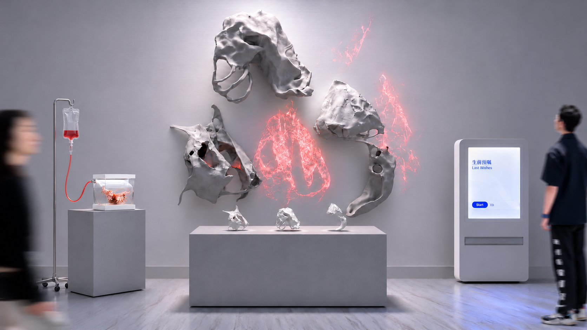
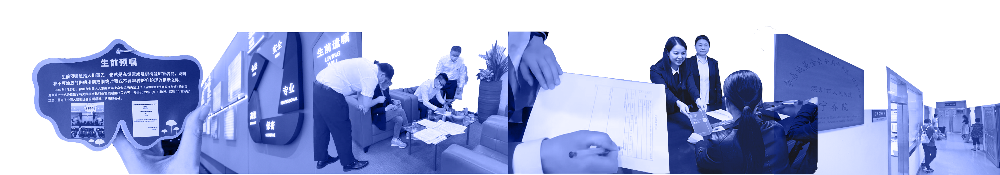
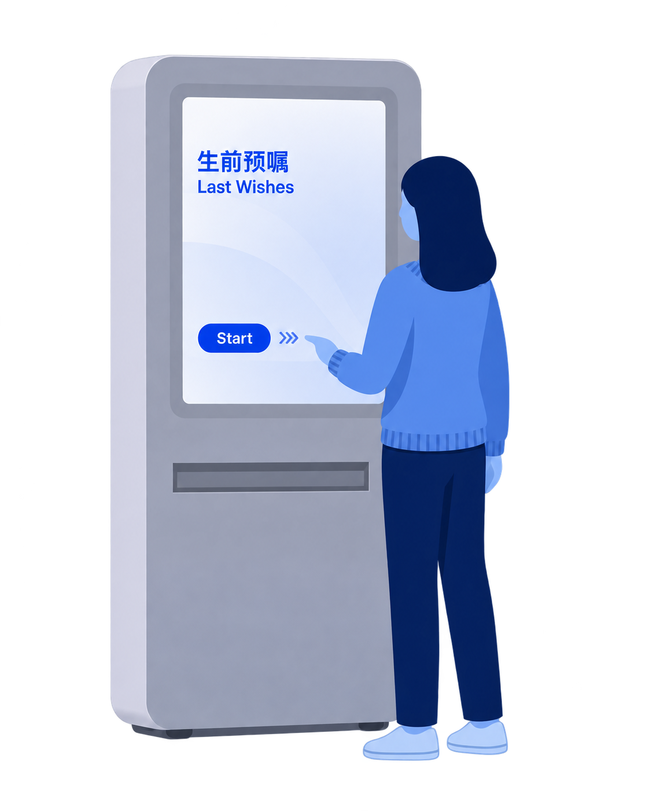
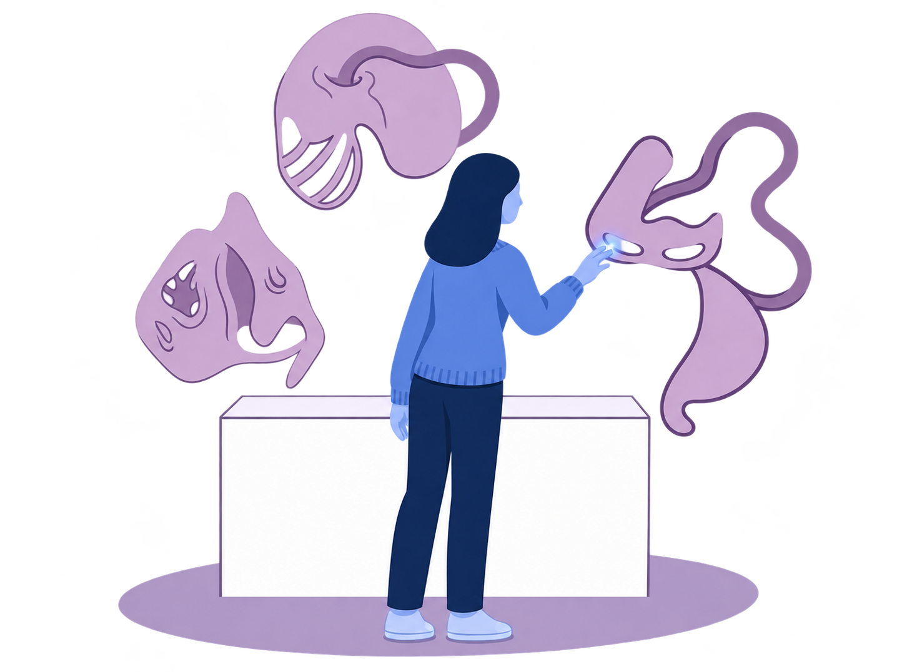
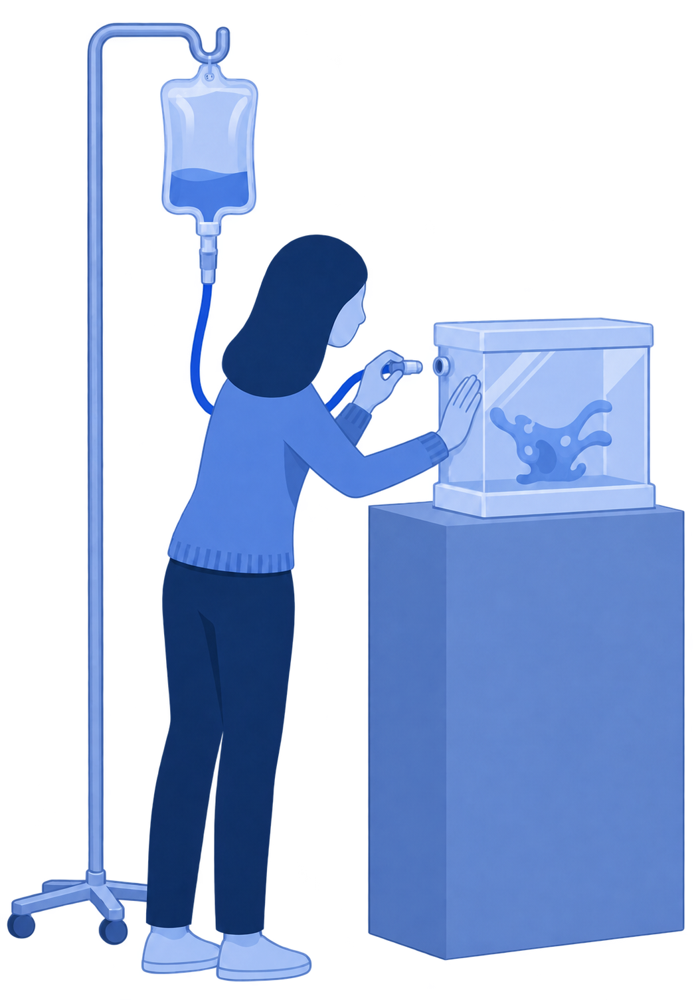
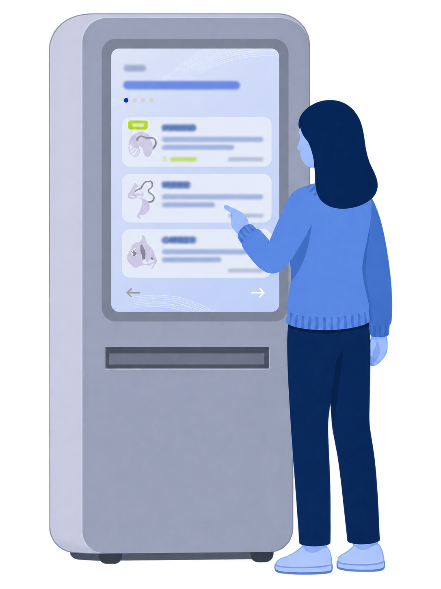
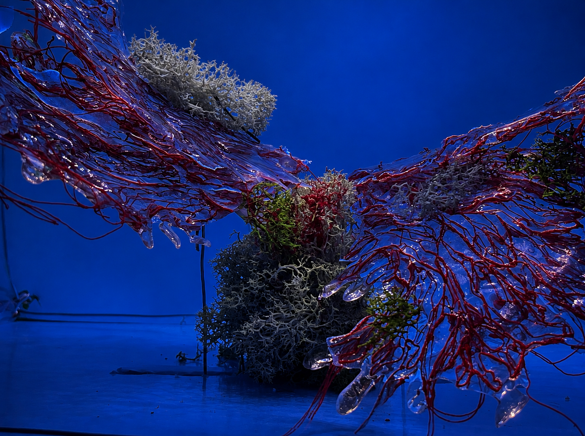
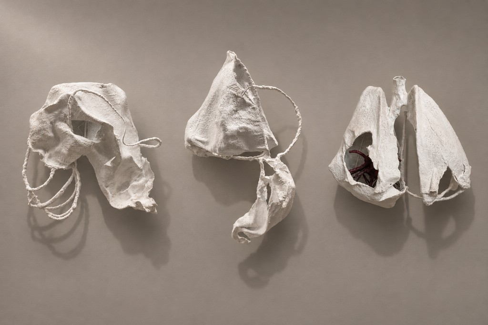

The directive must specify: (1) whether to undertake invasive resuscitation measures, (2) whether to use life support systems.

Shenzhen, China · 2022–2024
Shenzhen Living Will
A System for Living Will Services in China
Through an investigation of China’s living will legislation in 2022, this project analyzes the pain points of the current system and develops a new system that integrates both online platforms and offline experiences, enabling users to navigate, create, and manage their living wills while gaining a deeper understanding of human rights issues
BACKGROUND
The turning point
In 2022, Shenzhen became the FIRST city in mainland China to pass legislation that honors the living wills of critically ill patients to REFUSE EXCESSIVE LIFE-SUSTAINING TREATMENTS.
The regulation
Article 78
Medical institutions must respect a patient's wishes during the terminal stage of an incurable illness when the advance directive meets these conditions.
The directive must be either notarized or witnessed by at least two individuals who are not healthcare providers involved in the patient's treatment.
The directive can be documented in writing or through audio/video recordings.
The directive
Five Wishes
Five prompts give people room to express what they want from their care and what they want their loved ones to know.
01Who makes care decisions for me?
Name the person you want to speak for you if you can no longer make your own medical decisions.
02What medical treatment do I want?
Describe which treatments you would want or decline.
03How comfortable do I want to be?
Describe your preferences for comfort and relief.
04How do I want people to treat me?
Share how you would like others to care for you and spend time with you.
05What do I want my loved ones to know?
Leave a message for the people closest to you.
The cultural context
Who gets to decide before & The result

The role of family
Relatives share responsibility for care and major medical decisions.
Reluctance to discuss death
Talking openly about death may be seen as disrespectful or a bad omen.
Filial piety (孝, xiào)
Families may feel pressure to pursue more aggressive treatment as a way to show care.
Without a living will, patients, families, and doctors can face difficult decisions without a shared understanding of what the patient wants.
STUDY
01 / Why sign a living will and how to do it
Signing Guide
Who can sign?
18+An adult citizen
CapacityOf sound mind
Why sign in advance?
- Control over medical decisionsMake your wishes known if illness leaves you unable to communicate.
- Reduce family burdenEase the pressure on relatives making decisions under stress.
- Prevent confusion and conflictGive relatives and care teams a shared understanding of your wishes.
Life-support treatments
The research board examines three interventions that may prolong life in the final stage of illness and the burdens they can bring.

Feeding tube
Nausea, vomiting, diarrhea, constipation, or bloating.
Cardiopulmonary resuscitation (CPR)
Rib or sternum fractures, or lung injuries.
Mechanical ventilation
Pain and risk of infection.
02 / What people experience along the way
Journey Map

Stage
Promotion
Discovered promotional materials about living wills in hospitals.
Consultation
Visited the notary office to gather detailed information.
Acknowledgment
Listened to the notary office staff explained the details of Article 78.
Preparation
Filled out the online living will document with two witnesses present.
Confirmation
Saved the documents digitally.
Implementation
Stored the document and provided it to the doctor whenever needed.
Mood
anxiety
- Ambivalence
- Discomfort
- Discomfort
- Alienation
- Vulnerability
- Concern
Pain Point
Awareness
- Promotion Limitations
Materials are text-based and confined to hospitals.
- Motivation Gap
Many younger generation operate under the belief that ‘death’ is a distant concern.
Understanding
- Privacy Concerns
Sharing physical space with others creates feelings of discomfort.
- Professional Concern
Guidance is provided by officers, leading to a lack of medical expertise.
Commitment
- Apathetic Experience
Lack of emotional support during the process.
- Engagement Barriers
The document is in text form, making it difficult to connect with real-life treatment scenarios.
Continuity
- Storage Complexity
Limited to personal digital storage, making it inaccessible to patients who have difficulty accessing digital tools.
- Trust Issues
Signers worry that the document may be overlooked at the final stage.
Solutions
Multi-Sensory Guidance
Incorporate tactile, auditory, and other sensory inputs.
Immersive Space
Create an immersive experience in a private space that provides emotional support.
Warmer Process
Design a warm graphic style for the user interface of the online platform.
Family-Based Approach
Provide a structured method for families to discuss decisions and securely store their documents.
03 / Research patterns
Survey
Attitudes Toward Living Wills
Interviews with 48 people explored how attitudes varied by age.
| Response | ≤20 | 30–47 | 48–61 | 61+ |
|---|---|---|---|---|
| Did it | ||||
| Decided not to | ||||
| Know, undecided | ||||
| Know, won’t do | ||||
| Heard, unclear | ||||
| Never heard of it |
Larger circles represent more responses. The research board shows relative sizes.
Signers’ Wishes
Treatment preferences across three end-of-life conditions.
- Want life support
- Defer to doctor
- Decline life support
End stage of life
0.9%60.7%36.4%
Coma, unlikely to regain consciousness
0.6%45.7%51.6%
Permanent brain damage
0.6%34.0%63.1%
Percentages follow the research board. Unfilled space indicates the remainder to 100%.
04 / Who we design for
Persona
40 · Male · Married · Bachelor’s degree
Jin Chao
Independent · Responsible · Prudent
“I hope to have a private and immersive space.”
Bio
Jin Chao has faced the decision to stop life-sustaining treatment for his unconscious father.
Frustrations
- The process at the notary office feels overwhelming and confusing.
- He is unsure how to explain his decision to family or trust them to follow through.
Expectations
- Involve family members in the decision.
- Make end-of-life situations and treatments easier to understand.

28 · Female · Single · Bachelor’s degree
Lingling Ji
Empathetic · Practical · Open-minded
“I just learned the difference between having a living will and euthanasia.”
Bio
Learning about living wills made Lingling Ji want to understand the full process.
Frustrations
- The purpose and benefits of living wills are unclear.
- Misunderstanding leads to fear and resistance.
Expectations
- Explain what a living will contains.
- Offer online storage and the ability to update decisions.
- Provide a private, personalized space for the process.
DESIGN DEVELOPMENT
Service Flow
- 01

Check In
Enter your information and add family members.
- 02
Explore Treatment Options
Learn about different care and life-support scenarios.
Optional consultation
- 03


Try the Simulation
Interact with the installations and reflect on a treatment decision.
- 04

Record Care Preferences
Return to the screen and record your preferences.
- 05
Review & Print
Review your choices and print a copy of the document.
- 06
Finalize the Document
Review next steps and seek notarization if needed.
Prototype
Extubation Device

Life Support System
